渓谷と南国の海、二つの宮崎を楽しむ旅。
宮崎空港から高千穂へ向かい、1泊目は高千穂。2日目に宮崎市・青島方面へ移動し、3日目は日南海岸を巡ります。移動距離は長めですが、景色の違いが大きく、充実した旅になります。
神話の里・高千穂峡から、青島と日南海岸の南国ドライブへ。チキン南蛮、冷や汁、宮崎牛、マンゴースイーツも楽しむ2泊3日です。
宮崎空港から高千穂へ向かい、1泊目は高千穂。2日目に宮崎市・青島方面へ移動し、3日目は日南海岸を巡ります。移動距離は長めですが、景色の違いが大きく、充実した旅になります。
高千穂峡、青島、日南海岸を巡り、渓谷と南国の海景色を楽しみます。
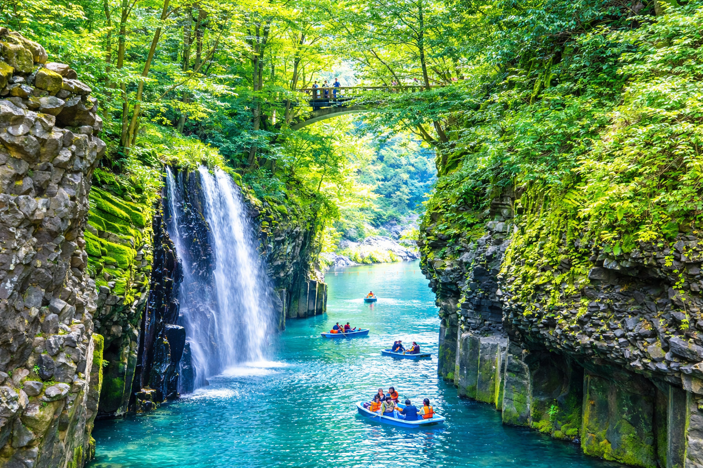
切り立った渓谷と真名井の滝が生み出す、宮崎を代表する絶景。ボートは事前予約を候補にします。
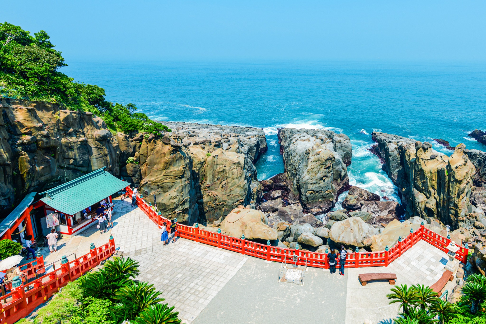
海食崖の洞窟に本殿がある珍しい神社。朱色の楼門と日向灘の雄大な景色を楽しみます。
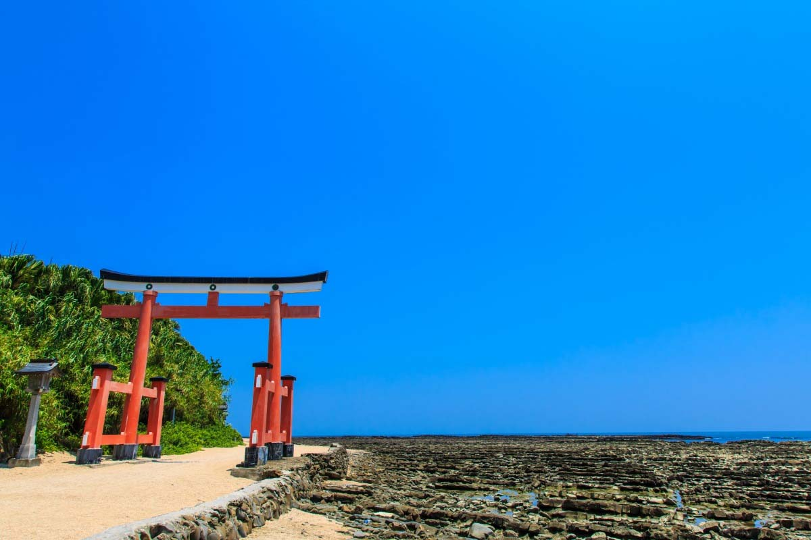
海辺の鳥居と波状岩が広がる南国らしい景観。青島神社とあわせてゆっくり散策します。
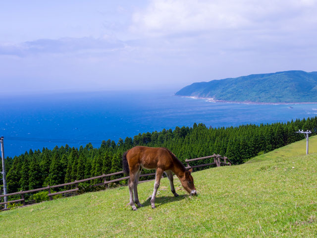
草原で暮らす野生馬と青い海を望める岬。日南海岸ドライブの終点候補です。
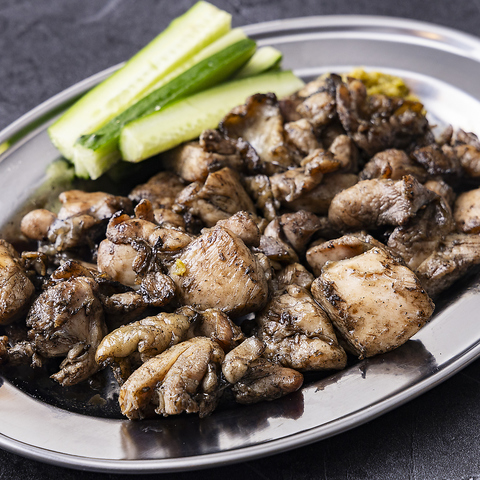
香ばしい炭の香りが食欲をそそる宮崎名物です。
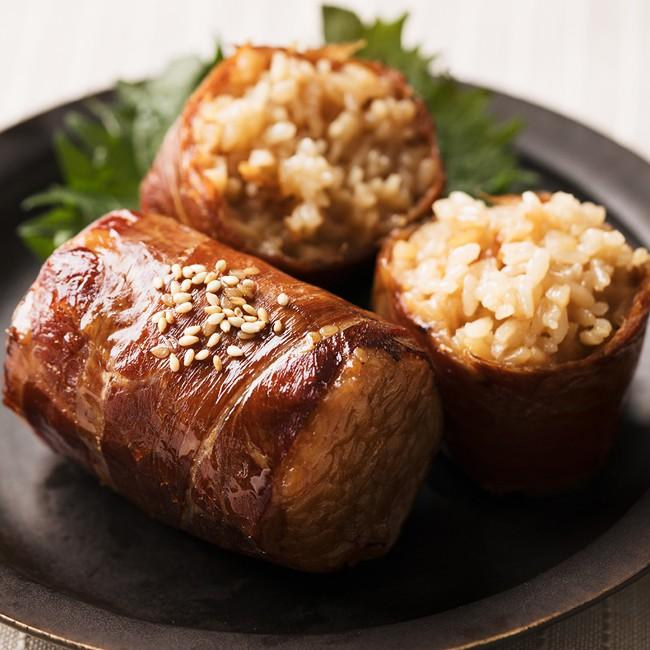
甘辛いタレで焼き上げた宮崎発祥の人気B級グルメです。
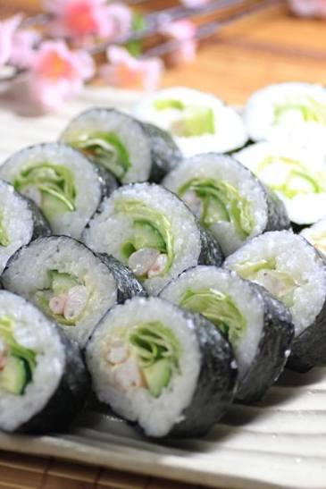
シャキシャキ食感が楽しい宮崎発祥の巻き寿司です。
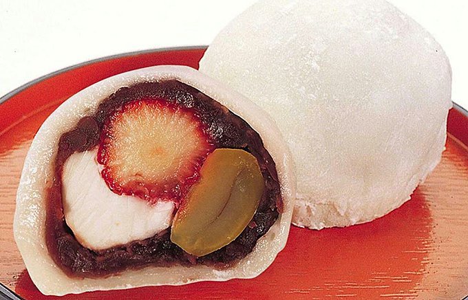
いちごや栗、クリームチーズなどが入った人気和スイーツです。
チキン南蛮、宮崎牛、冷や汁、完熟マンゴーパフェに加え、地鶏炭火焼、肉巻きおにぎり、レタス巻き、なんじゃこら大福など宮崎ならではの味覚を楽しみます。
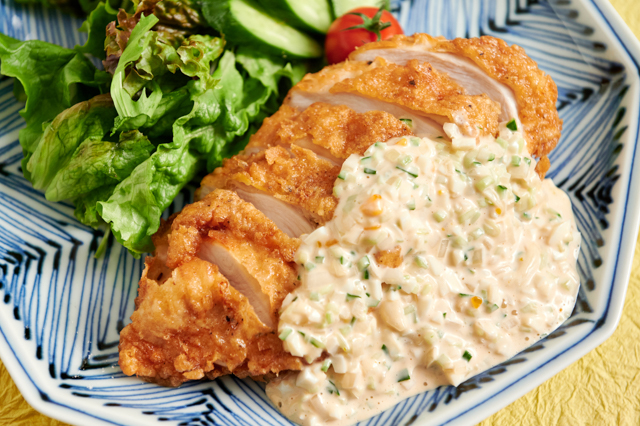
揚げた鶏肉を甘酢にくぐらせ、たっぷりのタルタルソースで味わう宮崎の代表料理です。
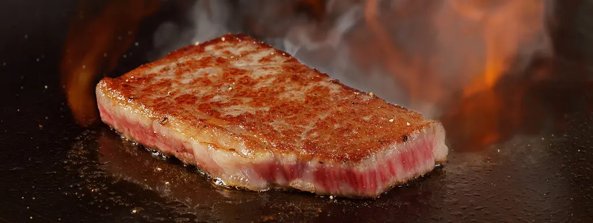
きめ細かな肉質と上質な脂を、ステーキや焼肉で味わいます。旅のごちそうにぴったりです。
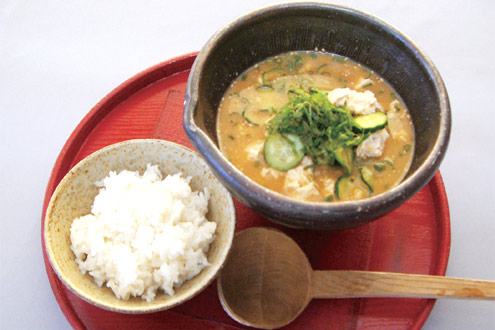
焼いた魚や味噌の旨みを活かした冷たい汁をご飯にかける、さっぱりした郷土料理です。
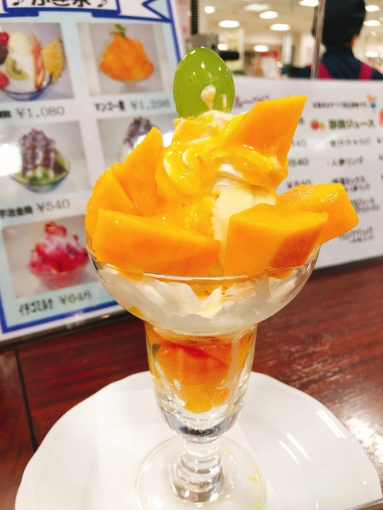
完熟マンゴーを贅沢に使った華やかなスイーツ。宮崎市内や空港周辺で旅の締めに楽しみます。
4月中旬〜下旬は、高千穂峡の新緑と日南海岸の海景色を一度に楽しめます。高千穂は朝晩が冷えやすく、日南側は日差しが強くなるため、服装を調整します。
レンタカーを活かし、景色と食をしっかり盛り込んだ流れです。
宮崎空港から高千穂へ移動し、高千穂峡、神社、夜神楽などを組み込みます。
天岩戸神社などを巡った後、宮崎市・青島方面へ。夕方は海辺を楽しみます。
堀切峠、青島、サンメッセ日南、鵜戸神宮方面を巡り、宮崎グルメを楽しんで空港へ。
高千穂を入れる場合は移動時間が長いため、初日を高千穂泊にする構成です。